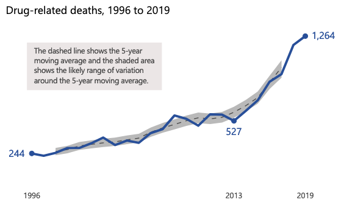
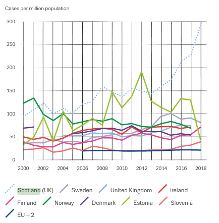
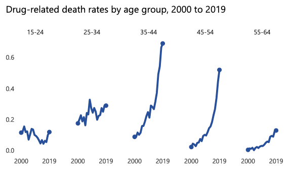
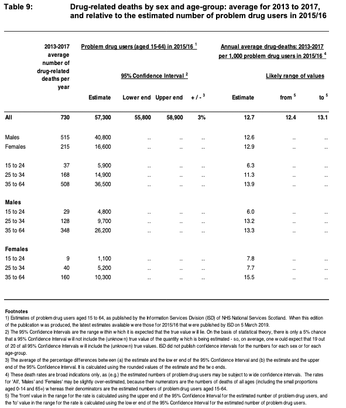
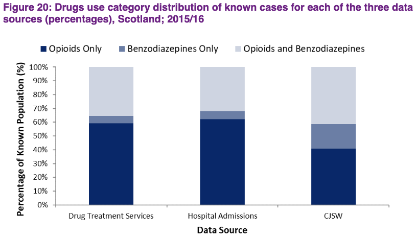
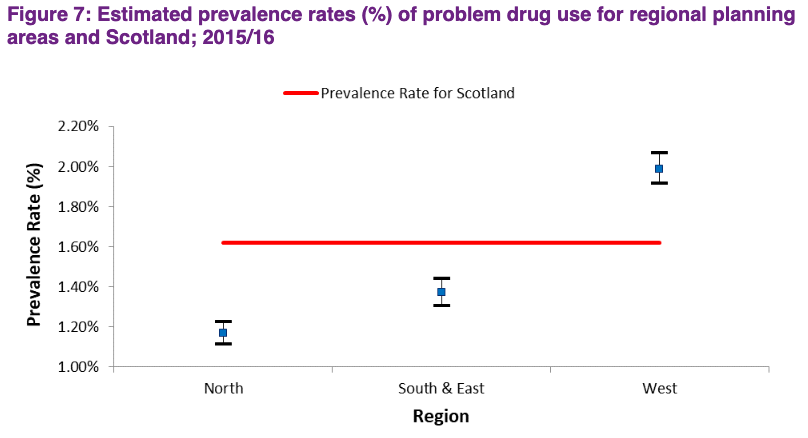
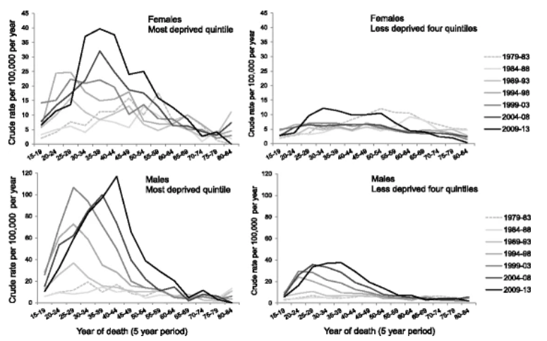

State of play in Scotland
According to the BBC (Clements, 2020), 1264 people died of drug misuse in Scotland in 2019, that is 6% more than the previous year and more than double than 2014. That represents the highest number since records began in 1996.
The article goes on to highlight the policies pursued by the UK and the Scottish government. Thus, the Misuse of Drugs Act appears to be reserved for the UK parliament, while the Scottish government advocates more control over regulation, to test initiatives such as safer injecting facilities. It is worth noting that as an analysis of the issue, in this respect both governments focus their efforts on alleviating deaths, not focusing on the causes of such behaviours or the social consequences of such behaviours. Is the right approach to focus on getting people to safely use a substance that has the consequence of driving that group into destitution? These and similar questions will be discussed in the analysis of the issue below.
Continuing with the statement of facts, the European Drug Report (European Monitoring Centre for Drugs and Drug Addiction, 2020) presents the graphic DRUG-INDUCED MORTALITY RATES AMONG ADULTS (15-64). It is clear that Scotland leads by far in the number of deaths related to drug misuse.
On the other hand, as the same report highlights (Drug-related deaths in Scotland, 2019, 2020), in 94% of all drug-related deaths, more than one substance was involved. Thus, the substances in question are listed below with their respective number of deaths:
- Heroin and/or morphine: 645 deaths, more than in any previous year and 51% of the total.
- Methadone: 560 deaths, the same as in 2018 (44%).
- One or more opioids (including heroin/morphine and methadone): 1,092 deaths, more than in any previous year (86%).
- ‘Street’ benzodiazepines (such as etizolam): 814 deaths, more than in any previous year (64%).
- ‘Prescribable’ benzodiazepines (such as diazepam): 195 deaths, fewer than in 2017 and 2018 (15%).
- Gabapentin and/or pregabalin: 438 deaths, more than in any previous year (35%).
- Cocaine: 365 deaths, more than in any previous year (29%).
For its part, the European report indicates that in Scotland, the involvement of various criminal groups in the large-scale manufacture and distribution of the previously mentioned "street" benzodiazepines is part of the particular characteristics of the region on which this research is focused, being implicated in 64% of the total number of deaths. The Report states that “Typically made to look like 10-milligram diazepam tablets..., these often contain new or uncontrolled benzodiazepines. Substances that pose a high risk of severe poisoning have also occasionally been used, such as opioids and scopolamine.”
Profile of the drug addict
From the National Records of Scotland (National Records of Scotland, 2020), we can extract the following profile of drug-related deaths:
- About 7 out of 10 people were men.
- More than two thirds were in the 35-54 age range.
- Three quarters of the deaths occurred in the following areas: 404 in Greater Glasgow & Clyde, 163 in Lanarkshire, 155 in Lothian, 118 in Tayside and 108 in Ayrshire & Arran.
- More than half of the deaths involved the following substances: heroin and morphine (Opioids).
After this brief summary provided by the report, it is considered necessary to present the graphs also provided by the report, which will help to further narrow down the profile of the user of these substances.

Both graphs present percentages of drug-related deaths per 1000 people. Although the most striking age range is 35-44 years, all age ranges show increases in the percentage of deaths. However, since the research is focused on the analysis of the policies carried out by the Scottish government and already under the suspicion that the policies carried out by the Scottish government are focused on the reduction of the number of deaths, it is also of interest for the purpose of this research to present the following table, also offered by the National Records of Scotland (Drug-related deaths in Scotland, 2019, 2020):
The table was produced by the Information Services Division that belongs to the NHS Scotland. (Prevalence of Problem Drug Use in Scotland, 2017). From this source it is important to highlight the following aspects:
- “The number of individuals with problem drug use in Scotland was estimated to be in the range 55,800 to 58,900 during 2015/16. This represents an estimated prevalence rate of approximately 1.62%.”
- “The majority of individuals with problem drug use were male (71%). The prevalence rate amongst males was 2.35%, this compares to 0.92% for females.”
- “The rate of problem drug use amongst males and females was highest in the 25 to 34 years age group. The prevalence rates for males were higher than for females in each age group. The rate for males aged 15 to 24 was more than four times higher than the equivalent rate for females.”
- “The highest regional rate was 1.99% in the West of Scotland compared to 1.37% in the South & East, and 1.17% in the North. The estimates suggest that prevalence rates are tending to be higher in the most populated areas of Scotland, which include large urban areas.”
- “The latest national prevalence rate is lower than was observed for 2012/13. However, due to some changes to the data included for this study and the margin of uncertainty that surrounds the statistical models and assumptions, it is not possible to conclude that a real reduction has occurred.”
Prevalence is defined by the same document as the total number of cases of the risk factor in the population at a given time. So, the prevalence rate is the number of individuals shown as a proportion of the overall population.
Another chart worth displaying is the following:
Where the Data Source for the estimation is taken from Clients registering with specialist drug treatment services, Drug-related hospital admissions and Criminal Justice Social Work (CJSW) reports. It is worth to notice that opioids represent approximately 94% of all the persons receiving drug treatment and those admitted to hospital, compared to 82% identified by CJSW, where benzodiazepines are in higher proportion.
From the previous chart, West of Scotland represents 60% of the overall drug prevalence estimate for Scotland, despite of the lower overall proportion of Scottish population aged 15 to 64 (49.0%). For the South & East of Scotland, 21.5% of the overall drug prevalence estimate, and represents a similar proportion of the overall Scottish population aged 15 to 64 (25.3%). The North of Scotland makes up 18.5% but makes up a much larger proportion of the overall Scottish population aged 15 to 64 (25.6%).
Again, and for the sake of this research, some definitions are extracted from the glossary of this document. The substances listed below will be described in a separate section. Those will serve to further narrow down the profile of the problem drug user:
- Problem drug user: “the problematic use of opioids (including illicit and prescribed methadone use) and/or the illicit use of benzodiazepines and implies routine and prolonged use as opposed to recreational and occasional drug use.” (Prevalence of Problem Drug Use in Scotland, 2017)
- Benzodiazepines: prescribed tranquilisers or anxiolytics and hypnotics (to pro. Includes diazepam (Valium), lorazepam, librium, nitrazepam, temazepam.
- Opioid: opium or derivatives, used in medicine for inducing sleep and relieving pain. Includes heroin (diamorphine), morphine, methadone, opium, codeine, pethidine, dihydrocodeine (DF118).
On the other hand, the article "Drug-related deaths in Scotland 1979-2013: evidence of a vulnerable cohort of young men living in deprived areas" (Jane Parkinson, 2018) shows that there is a considerable difference between drug-related deaths in the most deprived areas compared to those cohorts from other areas; as the following chart shows (“Crude drug-related death rates per 100,000 population per year in Scotland by age, period, sex and deprivation*. * age is by five-year age groups for ages 15–84 years and period by five-year periods 1979–83 to 2009–13”):
Scottish Government approach
Harm Reduction approach
Although the official stance of the Scottish government is not explicitly harm reduction, certain issues such as the focussing the statistics of the drug situation in Scotland on drug-related deaths and the funding of organisations such as the Scottish Drugs Forum, which states as part of its vision "drugs-related harm cannot thrive" and part of its aims to "reduce future and recurring problematic drug use", suggest that it is at least being advised to take this approach.
Thus, in order to explain what the harm reduction approach consists of, this research will be based on Harm Reduction International. But first, let's take into account what SDF says about harm reduction (Scottish Drugs Forum, 2021):
“Currently, our work in this area covers the prevention of drug-related deaths; co-ordinating and supporting the supply of Take-Home Naloxone; work on the prevention and response to outbreaks of bacterial infection; improving the sexual and reproductive health of people who use drugs”
Therefore, having an idea of what kind of policies harm reduction is, it is necessary to dig a little deeper and define what "harm reduction" means. So, according to Harm Reduction International (Harm Reduction International, 2021), harm reduction consists of “policies, programmes and practices that aim to minimise negative health, social and legal impacts associated with drug use, drug policies and drug laws”. The same website goes on to state those practices and services for drug-related problems: "drug consumption rooms, needle and syringe programmes, non-abstinence-based housing and employment initiatives, drug checking, overdose prevention and reversal, psychosocial support, and the provision of information on safer drug use."
Read more about Harm Reduction: https://www.hri.global/what-is-harm-reduction
Drugs education and prevention
Education and prevention seem to be one of the main approaches followed by the Scottish Government for reducing the number of people with problem drug use in Scotland. This is intended to emphasise prevention and early intervention for young people and those most at risk of alcohol or drug addiction (Rights, respect and recovery: alcohol and drug treatment strategy, 2021). The main commitments include:
- Identifying and implementing actions to reduce inequalities
- Working with experts and those with lived experience to address stigma
Among the proposals to implement this strategy, the following stand out:
- Revise the programme of alcohol and drug use education in schools
- Early intervention for those at risk of developing problem drug use
- Develop guidance and resources that can provide accurate, evidence-based, relevant information around alcohol and drug use
Drug Deaths Task Force
Established in July 2019 by the Minister for Public Health and Sport, the main goal of the Drug Deaths Task Force is to tackle the rising number of drug deaths in Scotland and to reduce the risk of harm, by implementing the following activities:
- Examine and publish evidence of the triggers of drug deaths
- Publish good practice about what has worked in other parts of the UK and internationally
- Identify, spread and sustain good practice in Scotland
- Identify barriers in the planning, commissioning and delivery of addiction services
- Review whether the Misuse of Drugs Act 1971, recognising that this is reserved to the UK Parliament
- Make recommendations for changes in current health and social care practice
National Provisions of Naloxone
Naloxone is a medicine that can reverse temporarily the effect of an overdose of opioids.
This programme has been funded with £1 million, over 5 years from 2011 to 2016 (Scottish Government - Riaghaltas na h-Alba, 2021). Over forty-six thousand naloxone kits have been supplied between 2011-2012 and 2017-2018.
Through our funding to the Scottish Drugs Forum, we continue to support efforts to improve the provision of naloxone, as well as the following actions:
- Developing training programmes and improving the availability of naloxone across different services: Police and Prison Service
- Supporting to Alcohol and Drug Partnerships and Health Boards
- Training, information and awareness materials/li>
- Monitoring and evaluating the program through Information Services Division of National Services Scotland
Report Illicit Drug Reaction
Through the Reporting Illicit Drug Reactions website an attempt is made to collect data for adverse reactions and harms related to Psychoactive Substances as well as illegal drugs.
The website is created as a tool for use by health workers with contact with drug users to submit information for collection and analysis.
The main aim is to improve the clinical understanding of drug harms and to reduce the length of time between the emergence of drug-related health harm and the development of effective treatment. This project is co-ordinated by the Public Health England and delivered by the Medicines and Healthcare Products Regulatory Agency.
Licensing to prescribe Diamorphine, Cocaine and Dipipanone
Under the Misuse of Drugs Regulations 1997, the Scottish Ministers have the power to grant licences to allow registered medical practitioners to prescribe, supply and administer Cocaine, Diamorphine and Dipipanone for the treatment of drug misuse.
It has been presented an application form and guidance in June 2019 for this licence.